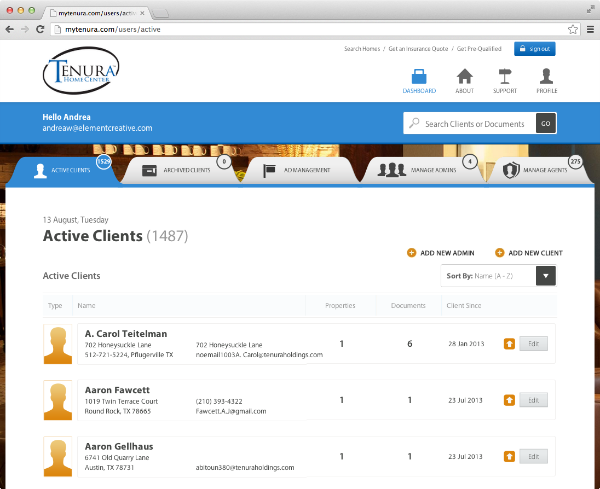
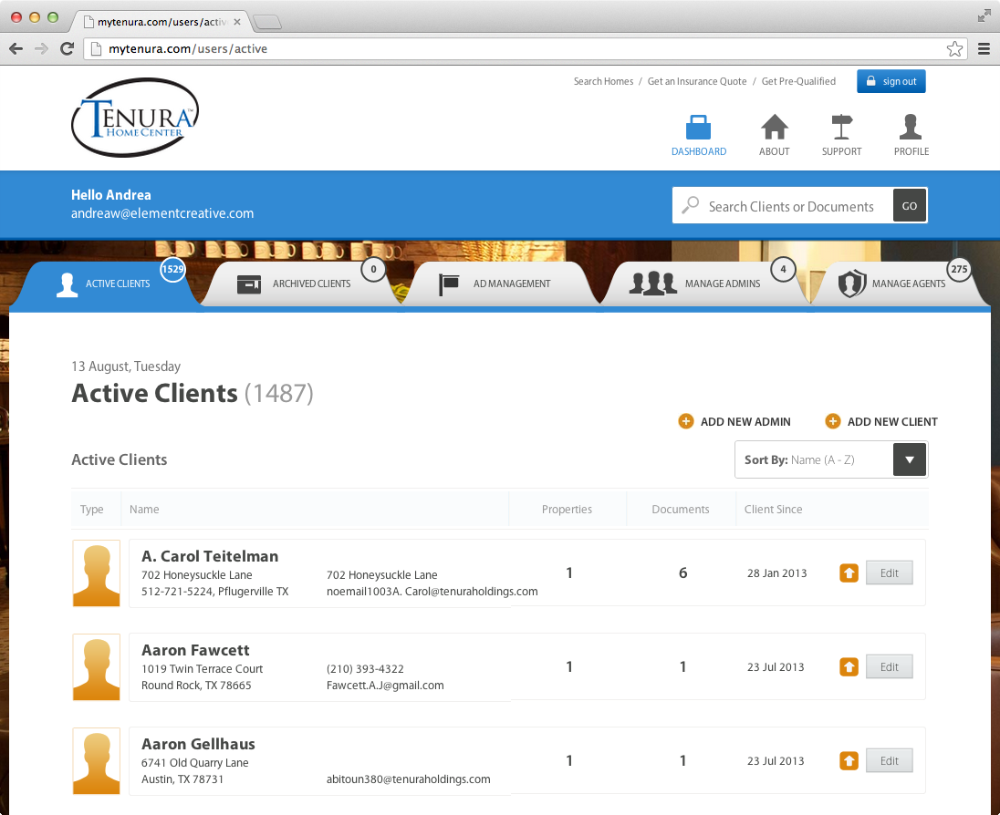
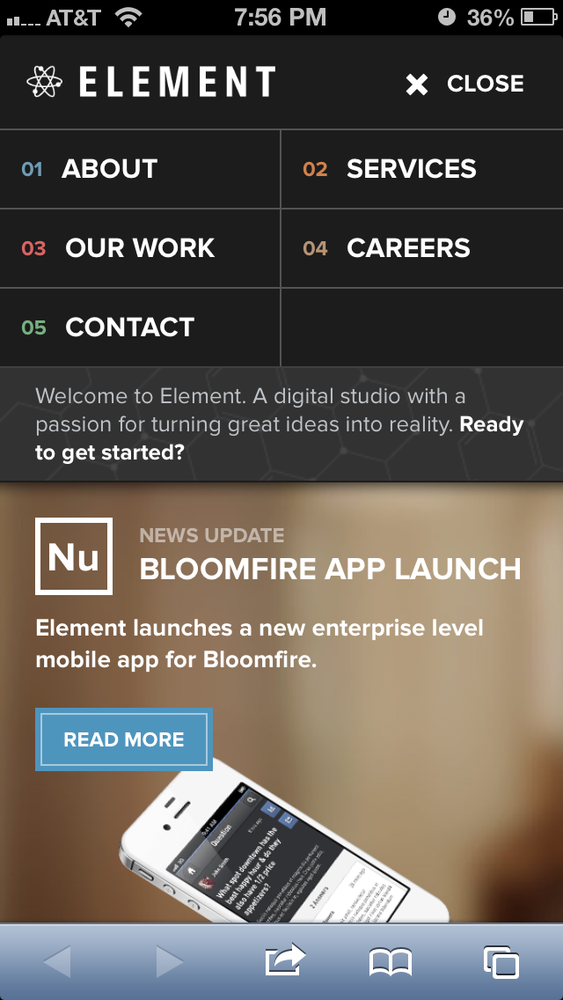
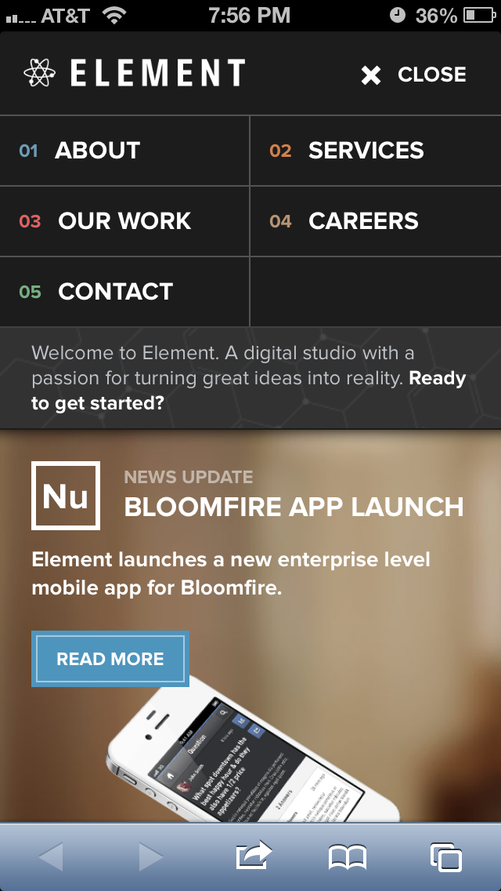
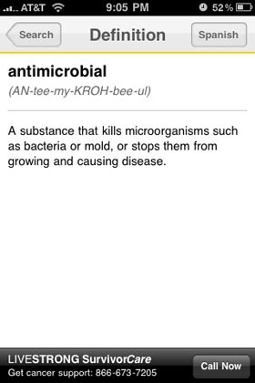
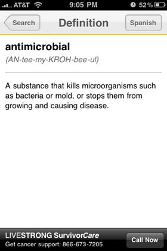

Joshua Kemmerling is a developer at Projekt202. He is currently working on something special.
Joshua Kemmerling is a developer at Projekt202. He is currently working on something special.
The Living Balance Sheet is an iPad app that allows Guardian Life Insurance brokers to create custom presentations based on the customer they are speaking with.
The presentations are based on the traditional paper pamphlet that the salesperson usually uses but adds in animations and videos to help sell the Guardian Life Insurance products.


myTenura is an online document repository that allows Tenura clients to access all of their documents in one place at any time.
Custom management software was created to allow all administrators of different types to add, modify or delete client information as needed and connect clients to agents.
The entire web app was built using .Net and MS SQL server and ties into Tenura's existing internal software to accept and retrieve client information from their different subsidiaries.
 

Element Creative is an interactive agency in Austin, TX and needed a new site that highlighted their expertise. This version of the site was a major update from the first site that existed when the company launched. The entire site is fully responsive, has a blog and a news section and accepts newsletter sign ups.
The most recent technologies were used to ensure that the site is as up-to-date as it can possibly be.
 

Tasty Trailers is an mobile app that helps you to discover food trailers near you, on the go. Tasty Trailers is built for the iPhone and uses a custom API to manage and store the data. All of the data is stored in a MySQL database and served using PHP.
The app ustilizes web and native views to allow for rapid updates to screens that need it.


Chevy partnered with MSN to create a promotional website for a competition, Route 66, where videos submitted by film makers could be voted on to select a winner. The website was built to run on Android and iPad tablets and on iPhone and Android smart phones.

Central Market worked with Sprngbox to create mobile websites that a user will be directed to after scanning a QR in Central Market stores.

The LIVESTRONG iPhone application allows users to search 6,000+ cancer terms provided by the National Cancer Institute, without internet access. Users can choose their default language, and then switch views between English and Spanish as needed to facilitate translation.
 

The LIVESTRONG Foundation worked with Springbox to redesign their website. The site consisted of over 500 pages and needed the ability to have multiple authors and administrators to manage the content.


The Fox Trial Finder tool helps people diagnosed with Parkinson's disease find local clinical trials that may be a fit for them. Potential volunteers can learn about trial participation, find potential trial matches based on their location and key health criteria, filter results by area of interest or need, and read detailed information about each trial.
The tool facilitates communication between volunteers and the researchers who need them. Saving a profile allows volunteers to indicate interest in suggested matches, get alerts on new matches, and connect with trial teams via a secure messaging system.